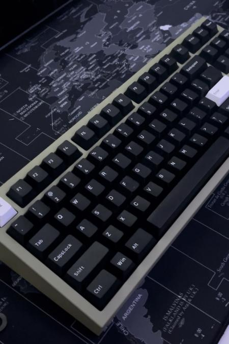
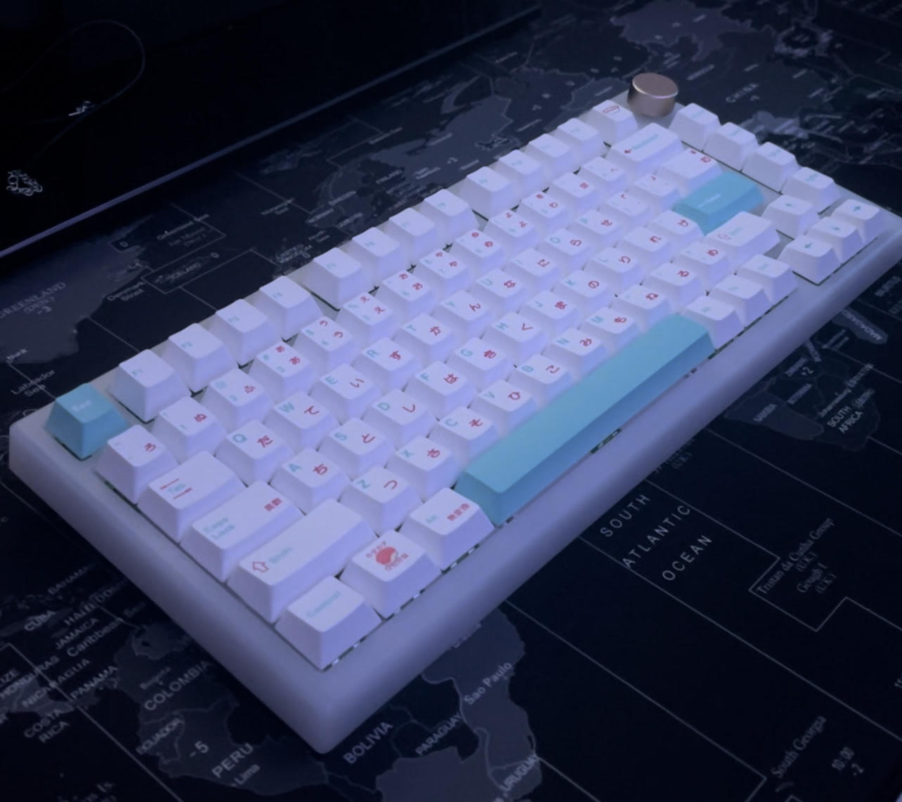
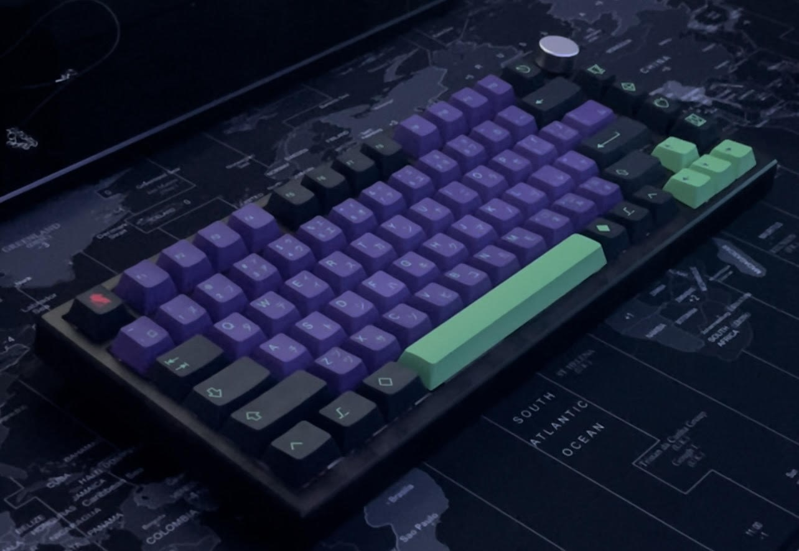
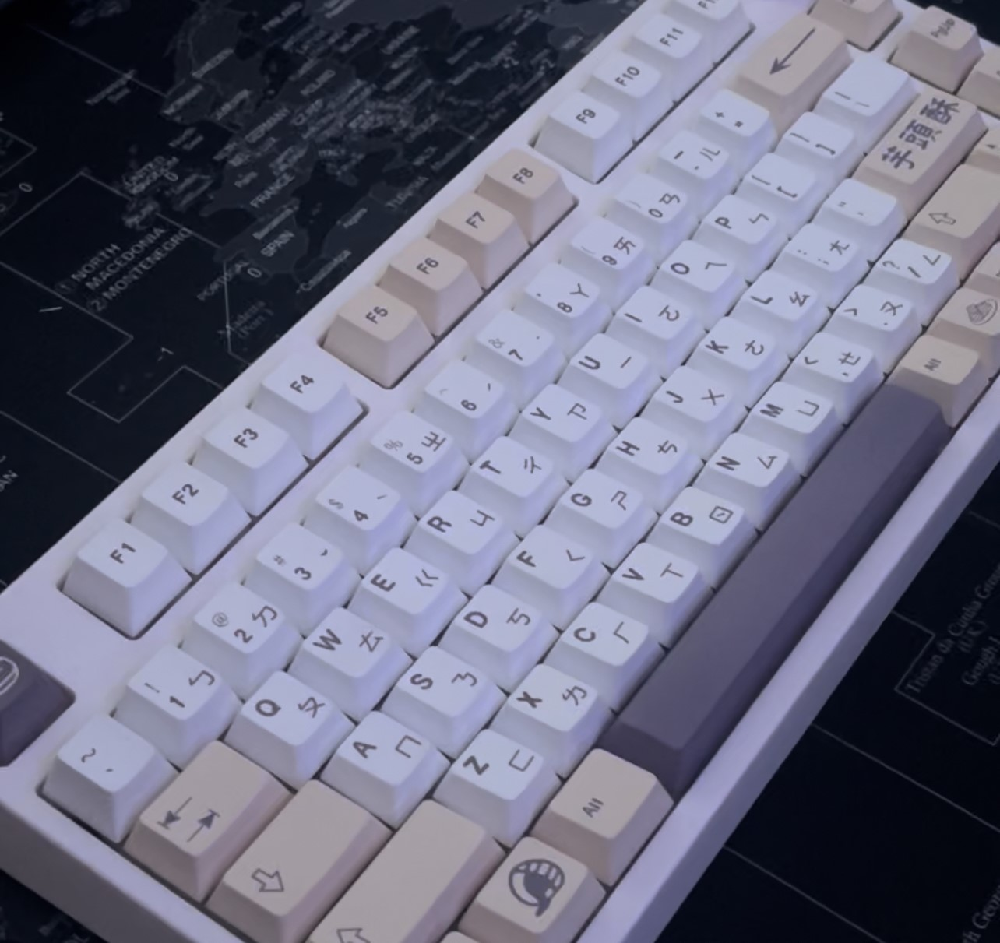
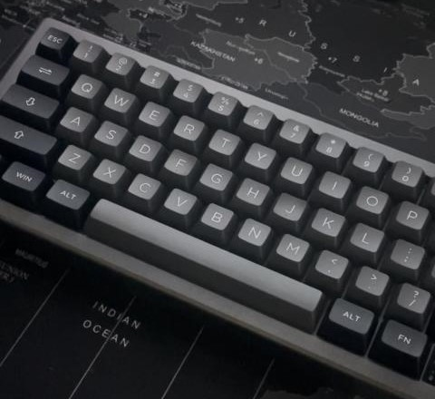
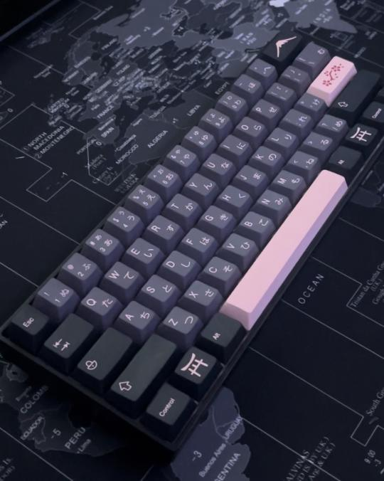
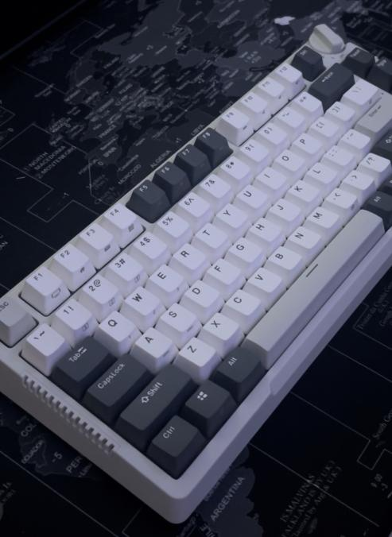

・✫・゜・。.
jesus christ looking at this it looks so bad im gonna fix it some other time and ill remove this message but fucks sake pls dont look at this subpage
nk87 olive edition
this is my first all-aluminum keyboard, and it was probably one of the most expensive that i have purchased.
switches - lubed olive switches
keycaps - wob keycaps
mods - n/a
stabilizers - stock
white feker ik75
this is one of my favorite boards, i wish i could mod it, but it is a snap-on case, making it way harder to open.
switches - lubed akko matcha switches
keycaps - sushi keycaps
mods - n/a
stabilizers - stock
black feker ik75
this board feels wonderful to type on, and i use it quite frequently for its silence and great feeling.
switches - stock akko haze pink switches
keycaps - evangelion keycaps
mods - n/a
stabilizers - stock
white th80
this board has my favorite switches, and it's one of my daily drivers. i have since updated the keycaps to white and black ones.
switches - lubed novelkeys creams
keycaps - taro keycaps
mods - n/a
stabilizers - stock
ek68
this board i received for free, and i gave it to my father for father's day!
switches - stock gateron yellow 2.0s
keycaps - stock keycaps
mods - n/a
stabilizers - stock
gk61
this board was my first mechanical keyboard! it's loved thoroughly but a little offset.
switches - lubed gateron browns
keycaps - night sakura keycaps
mods - n/a
stabilizers - stock
rk81
i love this keyboard! it feels wonderful to type on, great if you're looking for poppy keyboards.
switches - stock cyan switches
keycaps - stock keycaps
mods - n/a
stabilizers - stock